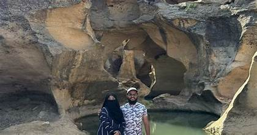
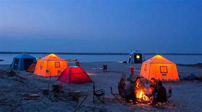

Kirthar National Park
A natural treasure of Sindh, home to wildlife, mountains, and rich landscapes.
A natural treasure of Sindh, home to wildlife, mountains, and rich landscapes.
Kirthar National Park is located in the Kirthar Mountain Range, spanning the districts of Karachi and Jamshoro in Sindh. It is the second-largest national park in Pakistan, covering more than 3,000 square kilometers.
The park is known for its rugged mountains, seasonal streams, and diverse wildlife, making it a popular destination for nature lovers, adventurers, and researchers.
Tourists visit Kirthar National Park for wildlife safaris, trekking, and exploring its scenic mountains. Wildlife lovers often spot Sindh ibex, gazelles, wolves, jackals, and numerous bird species.
The park also offers camping and eco-tourism opportunities, making it a great getaway for people from Karachi and Hyderabad. It is one of the few parks in Pakistan with such biodiversity in a desert environment.
